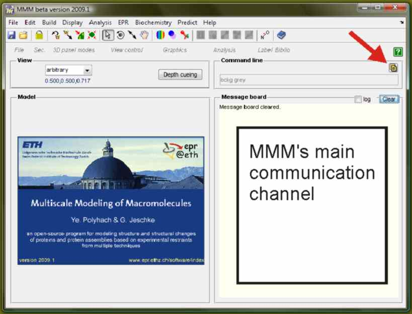

Overview &uarr | ↓ • Protocol for spin labeling & DEER simulation (tutorial) • Demo model of LHCII
MMM comes as a ZIP file with everything you need, except for optional third-party software that you need to download and install yourself for licensing reasons. Unpack the ZIP file into a directory of your choice. Add the directory to the Matlab path, for instance by using the File/Set path... menu item in the Matlab main window. Save the Matlab path by clicking the Save button if you want to keep it for future Matlab sessions. If you click the Apply button the path is set only for the current session.
You can now start MMM either via the Matlab Start button (left bottom corner of the main window) by selecting item Toolboxes/MMM/Start or by typing MMM in the Matlab command window.
For better performance, you may want to change the preferred PDB server (faster downloading of PDB files) and the SFX server (easier fulltext access for references without digital object identifier). Go to the File/Preferences menu item. Change the SFX server address in the edit field to the one of your home institution. If you do not have one, you can try the one of TU Berlin given above the edit field. This SFX server first creates the DOI the next step brings you to the journal homepage, which will recognize whether your institution has a subscription to this journal. Nevertheless, it is strongly recommended that you find the address of your own institution's SFX server (Berlin's taxpayers may not want to sponsor your research).

You can load a demo script
If you are not connected to the internet, you need to use the script
Running the script takes about ten minutes on a not too old laptop computer, it is usually faster with a desktop computer. Update of the 3D model display may be a bit slower than update of the Message board, hence, display update may lag behind the explanation. The script demonstrates capabilities of MMM and working with commands and scripts. The same functionality is accessible via the graphical user interface.
After running the script, the cover picture is in the clipboard.
The folder
The model freshly created from the PDB file will already contain a few references and will already have a few automatic annotations that can be inspected most easily with the keyword finder accessible via the via the Edit/Find by keyword menu item.
MMM comes with a demo model of major plant light harvesting complex LHCII, which you find in the subfolder LHCII as file cover_picture_2009.mmm via the script load button marked with a red arrow in the screenshot above. It is recommended to close and restart MMM before using this script, so that results really look as described in the following. This script demonstrates several features of MMM, including PDB download, structure display, selection of residues and cofactors, coordinate frame transform to make a symmtry axis the new z axis, display of a solvent accessible surface (if Michel Sanner's MSMS program is also installed), spin labeling, and spin label display. The script will run without MSMS being installed, just the solvent accessible surface will not be computed and displayed.
cover_picture_2009_no_internet.mmm.
LHCII contains the PDB file 2BHW. You can load this via the File/New/From PDB.../local file menu item. An initialization script 2BHW.mmm exists in the same folder. This script shows how to define secondary structure when loading a PDB file and how to control initial model display. You may also decide not to use this script (MMM asks). You will then end up with standard display and secondary structure assignement from the PDB file. You can obtain a better automatic secondary structure assignment by installing the DSSP program of Kabsch and Sander.
LHCII_demo_model.mat. This model can be loaded via the File/Open... menu item. It demonstrates concepts such as superposition of two structures, synonyms for structure names, annotation of a model, using a bibliography, and automatic literature search. See description of the LHCII model for a more detailed explanation.